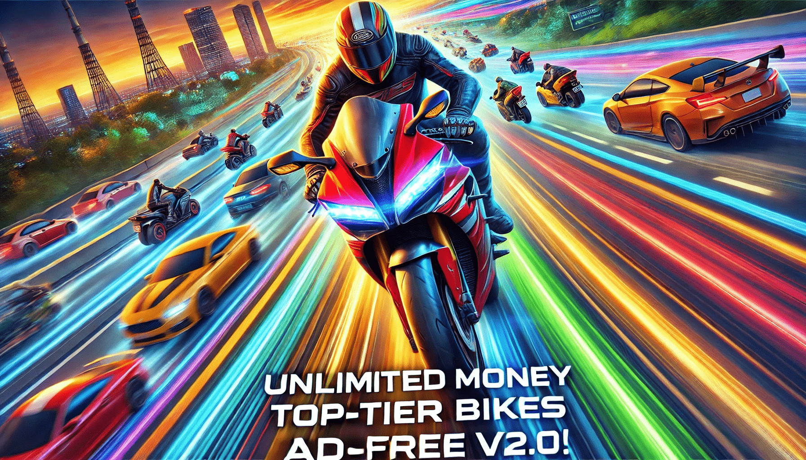

Traffic Rider Unlock All Bikes: The Ultimate Guide to Turbocharged Fun! 🚴♂️💨
In the vast world of mobile gaming, Traffic Rider stands out as one of the most exciting and immersive bike racing games. With stunning graphics, realistic controls, and a vast selection of bikes to choose from, it’s no wonder this game has captured the hearts of millions. However, let’s be honest — the thrill of zipping through highways on a Kawasaki Ninja is dampened when you’re stuck on that beginner bike that sounds like a lawnmower.
So, the million-dollar question is: How do you Traffic Rider Unlock All Bikes? Whether you’re a newbie or a seasoned player looking for a shortcut to gaming glory, this guide will take you through everything you need to know about unlocking every bike in Traffic Rider. Buckle up (or, should I say, strap on your helmet) because things are about to get fast and furious!
Why Unlock All the Bikes?
Before diving into the "how," let’s talk about the "why." Sure, the basic bikes are fun at first, but unlocking the premium bikes adds an extra layer of excitement and challenge to the game. Here’s why upgrading your ride is a game-changer:
- Speed That Makes Your Heart Race 🏎️: Advanced bikes like the Hayabusa and Ducati give you insane speed, making every race feel like a high-stakes action movie.
- Better Handling: Tired of crashing into trucks? Upgraded bikes handle like a dream, allowing you to weave through traffic like a pro.
- High Scores and Leaderboard Domination 🏆: Let’s face it — no one wants to be at the bottom of the leaderboard. Unlocking faster bikes boosts your score and earns you bragging rights.
- Flex Your Style: Let’s not underestimate the cool factor. Riding a sleek, fully-upgraded bike screams “I own this highway!”
The Basics of Unlocking Bikes in Traffic Rider
Unlocking bikes in Traffic Rider typically involves earning in-game cash or completing career mode levels. Here’s a breakdown of the main ways to upgrade your ride:
1. Earn Coins in Career Mode
Career mode is where the magic happens. As you complete missions, you’ll earn coins based on your performance.
Tips for Maximizing Coins:
- Drive close to other vehicles for near-miss bonuses.
- Maintain high speeds to earn time-based rewards.
- Avoid crashing to secure the maximum payout.
2. Level Up
Certain bikes are only unlocked when you reach a specific level. To level up quickly:
- Focus on completing missions efficiently.
- Replay earlier levels to improve your score.
3. In-App Purchases
If grinding isn’t your thing, you can always spend real money to buy coins or unlock bikes directly. But let’s be honest — where’s the fun in that?
The Shortcut to Unlocking All Bikes
Now, here’s the part you’ve been waiting for: How to unlock all the bikes without spending endless hours grinding or shelling out your hard-earned cash. While the traditional methods above are great, there are some shortcuts you can use to speed up the process.
1. Modify Game Files (APK Mods)
Many players turn to modified APKs (Android Package Kits) that allow you to unlock all bikes instantly.
- Pros: Instant access to all bikes and unlimited coins.
- Cons:
- Using modded APKs can get your account banned.
- It’s risky, as you might download malware instead of the actual game.
- You miss out on the fun and challenge of unlocking bikes the "honest" way.
2. Watch Ads (Yes, Really)
Traffic Rider offers free coins in exchange for watching ads. Sure, it’s not glamorous, but it’s a legit way to earn extra cash without spending real money.
Pro tip: Stack up your ad bonuses during a Netflix binge session. Multitasking for the win!
3. Daily Bonuses and Rewards
Log in every day to collect free rewards. It’s like a piggy bank — slow but steady progress!
4. Third-Party Coin Generators (Use Caution)
Some websites claim to generate unlimited coins for you. Proceed with caution, as most of these are scams designed to steal your personal information.
The Ultimate Bikes to Unlock
Now that you know how to unlock all bikes, let’s talk about which ones are worth the effort. While every bike in Traffic Rider has its charm, some are clearly superior. Here’s a quick rundown of the fan favorites:
- YNH S1
Speed: Moderate
Cost: Low
This beginner bike is decent for learning the ropes, but you’ll want to upgrade ASAP. - ZXF 10R (Kawasaki Ninja)
Speed: Fast
Cost: Moderate
A fantastic mid-tier option with great handling and acceleration. Perfect for intermediate players. - DCT STR (Ducati)
Speed: Insanely Fast
Cost: High
This beast is the Ferrari of Traffic Rider bikes. It’s fast, stylish, and handles like a dream. - V900 (Harley-Davidson)
Speed: Moderate
Cost: High
If you’re into cruisers, this bike offers a unique riding experience. - BMW S1000RR
Speed: Ultra Fast
Cost: Very High
The ultimate bike for pros. Unlocking this bad boy feels like winning the lottery!
Tips for an Epic Gaming Experience
- Play in First-Person Mode:The first-person mode makes the game more immersive and challenging. Plus, it’s super satisfying to see the road zoom past you.
- Use Headphones 🎧:The sound of roaring engines is pure ASMR for bike enthusiasts. Pop on some headphones for an enhanced experience.
- Avoid Aggressive Traffic:No driver on the highway is thrilled about your need for speed. Watch out for cars that suddenly switch lanes — they’re out to get you!
- Master the Controls:This is key when weaving through traffic; spend some time adjusting sensitivity settings.
- Have Fun:The game is all about enjoyment! Don’t stress too much about high scores or unlocking every bike; just enjoy the ride!
Final Thoughts
Unlocking all bikes in Traffic Rider APK might take some time, but the journey is half the fun. Whether you choose to grind through career mode, watch ads for extra coins, or (ahem) take a few shortcuts, the thrill of upgrading your ride makes it all worthwhile.
So, what are you waiting for? Get out there, hit the highway, and unlock the bike of your dreams. Just remember to drive responsibly — unless you’re in the game, of course. 😉